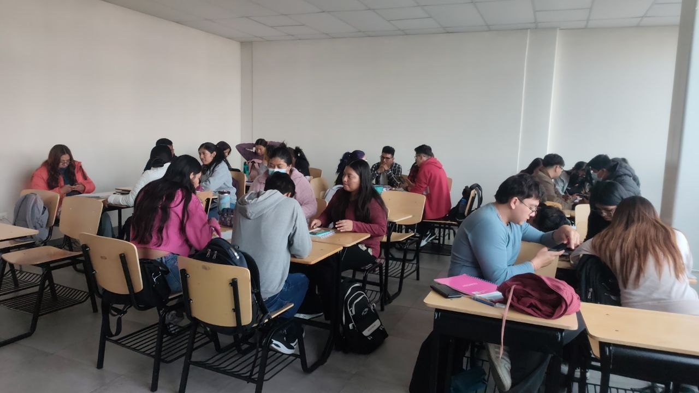
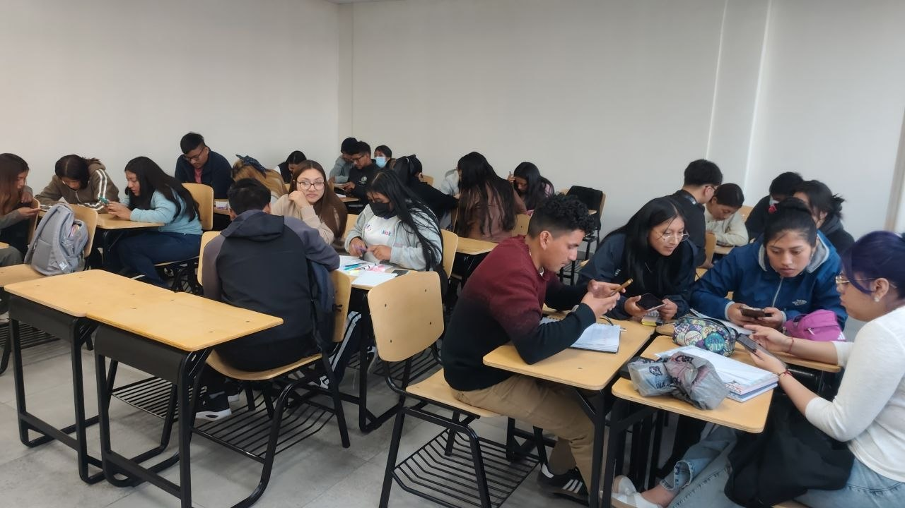
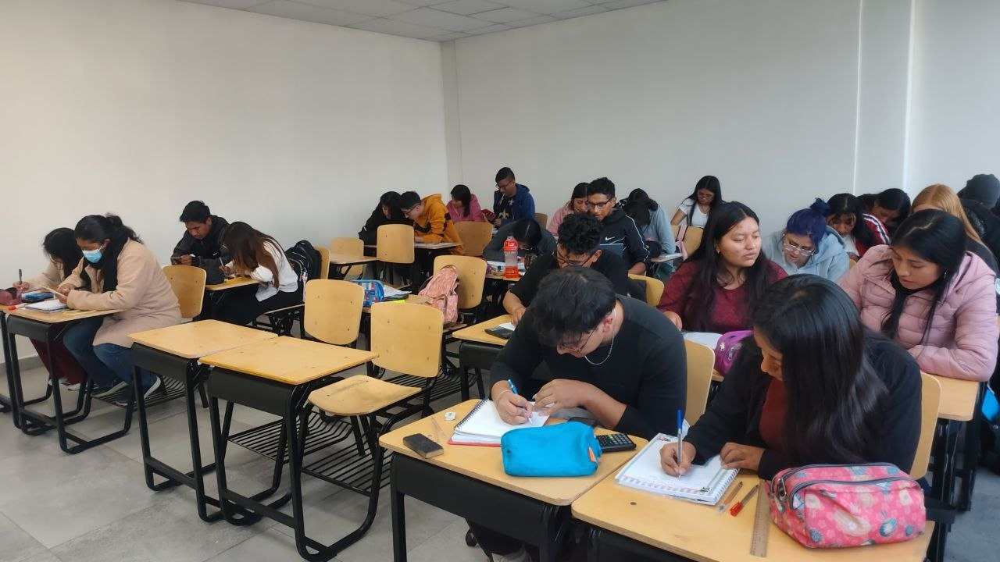

Carpeta 01: Talleres Pedagógicos Grupales
Actividades colaborativas desarrolladas durante las clases.
Taller 1: Concepto de temperatura
1. Título de la actividad: Concepto de temperatura
2. Fecha de realización: 07 de octubre de 2026
3. Integrantes del grupo: Saúl Cando, Luis Ramos, Viviana Espinel, Katheryn Yánez
4. Objetivo del taller: Ordenar objetos según su temperatura, justificar la respuesta con base en el estado de la materia y reflexionar sobre la definición de temperatura a partir del movimiento molecular.
5. Desarrollo de las actividades: Se ordenaron los objetos (A, D, C, B) de menor a mayor temperatura considerando el hielo, el cuerpo humano, el metal y el agua hirviendo. Luego se justificó la respuesta explicando que el hielo está a 0 °C o menos, el cuerpo humano a 36-37 °C, el metal absorbe radiación térmica y el agua hirviendo alcanza los 100 °C a nivel del mar. Finalmente se reflexionó sobre qué objeto resultaría más incómodo tocar y se redactó una definición propia de temperatura.
6. Conclusiones: La temperatura es la medida del movimiento de las moléculas de un objeto: si se mueven rápido, el objeto está caliente; si se mueven despacio, está frío. El agua hirviendo es el objeto más riesgoso de tocar por su alta temperatura.
7. Evidencias de participación:

Taller 2: Termómetros
1. Título de la actividad: Termómetros
2. Fecha de realización: 08 de octubre de 2026
3. Integrantes del grupo: Ledy Asaquibay, Viviana Espinel, Elcy Cando y Saúl Cando (Grupo N° 5)
4. Objetivo del taller: Definir qué es un termómetro y describir los diferentes tipos de termómetros, sus principios de funcionamiento y sus aplicaciones.
5. Desarrollo de las actividades: Se investigó el concepto de termómetro como instrumento que mide la temperatura aprovechando el principio cero de la termodinámica. Se describieron los tipos: termómetro de mercurio, digital, infrarrojo, de alcohol, bimetálico y de Galileo, con sus características, ventajas y usos.
6. Conclusiones: Existen diversos tipos de termómetros según el principio físico que utilicen (dilatación, radiación infrarroja, sensores electrónicos, bimetal). Cada uno se emplea en contextos específicos: salud, industria, ambiente o laboratorio.
7. Evidencias de participación:

Taller 3: Taller Pedagógico Grupal N° 3
1. Título de la actividad: Taller Pedagógico Grupal N° 3
2. Fecha de realización: 28 de octubre de 2026
3. Integrantes del grupo: Saúl Cando, Gabriela Quishpi y Ruth Suárez
4. Objetivo del taller: Desarrollar las actividades propuestas en el taller pedagógico grupal N° 3, aplicando los conceptos de física térmica trabajados en clase.
5. Desarrollo de las actividades: Se resolvieron las consignas del taller de forma colaborativa, aplicando los conceptos teóricos y procedimientos experimentales correspondientes al tema asignado.
6. Conclusiones: El desarrollo del taller permitió consolidar los aprendizajes del grupo y reforzar la aplicación práctica de los contenidos de física térmica.
7. Evidencias de participación:

Taller 4: Cambios de Fase
1. Título de la actividad: Cambios de Fase
2. Fecha de realización: 28 de octubre de 2026
3. Integrantes del grupo: Asaquibay Leidy, Cando Saúl, Guamán Evelyn, Ramos Alexander (Grupo 6)
4. Objetivo del taller: Comprender los cambios de fase de la materia, diferenciar los procesos endotérmicos y exotérmicos, y aplicar el concepto de calor latente para calcular la energía transferida durante la fusión y vaporización.
5. Desarrollo de las actividades: Se explicaron los estados de la materia y las transiciones entre ellos (fusión, solidificación, vaporización, condensación, sublimación y deposición). Se analizó la diferencia entre calor sensible y calor latente, aplicando la fórmula Q = mL para resolver un problema práctico de fusión de hielo. Finalmente, se interpretó la curva de calentamiento del agua y se expusieron aplicaciones cotidianas como la formación de escarcha y la ebullición.
6. Conclusiones: Los cambios de fase son transformaciones físicas que dependen del intercambio de energía y la presión. Durante una transición en equilibrio, la energía se emplea en cambiar el estado y no en variar la temperatura. El calor latente permite calcular la energía necesaria para fundir, congelar, vaporizar o condensar una sustancia.
7. Evidencias de participación: